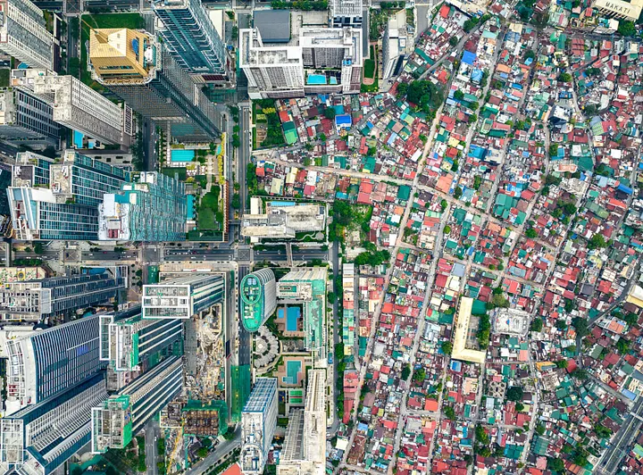

Over half of the world’s population now lives in urban areas, a figure projected to rise to 68% by 2050. In the Philippines, cities like Manila and Davao are urbanizing at an even faster pace. While modernization brings progress, it also creates significant environmental challenges, including increased pressure on ecosystems, depletion of natural resources, and loss of biodiversity. These impacts threaten the future of our natural world, affect our daily lives, and hinder progress toward achieving UN SDG 11.
Philippines is taking several steps in order to address the issue of urban environmental problems. Together with international parties, such as the World Bank, the government is promoting sustainable urban planning initiatives aligning with UN SDG 11. Cities like Davao are setting local policies for green infrastructure, waste management, and sustainable transport. Additionally, nationwide frameworks encourage cities to adopt cleaner energy, improve housing, and promote disaster resilience.
We, the Pave the Planet Green Organization (PVPG), as advocates and members of society, are concerned with the future of urbanization and its impact on the environment in the Philippines and around the world, with regards to UN SDG 11. The PVPG Org. is calling for change and action to how we design our cities, so that it may be beneficial for the community and still maintain sustainability for the environment.
The Urban Planning of the Philippines
Gregor Posadas (2025)